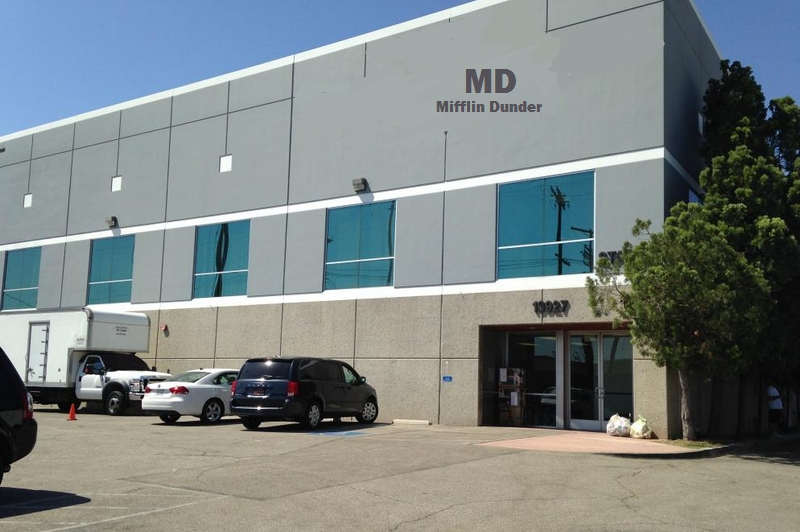
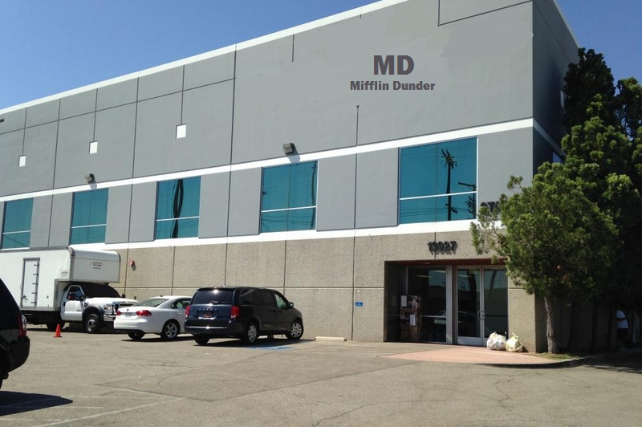

Minneapolis, MN Headquarters

 

The original Mifflin Dunder began at Saint Anthony Falls. The Mifflin Dunder founders used the poewr of the river to run the early paper mill, as well as a convenient base to transport product down river. Over the years, the Minneapolis factory took on many renovations and changes to meet the changing demand of the paper industry. A headquarters was opened at a nearby location in Downtown Minneapolis in 1949. It has remained the headquarters ever since.
The original factory, however, shuttered its doors in 2009. It was open for operation for a total of 119 years before giving way to modernity. The original building has now become a paper museum, open to the public. It is a vital piece of Saint Anthony History along with the Mill City Museum.